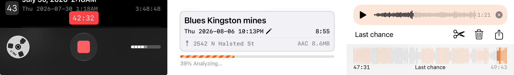

Hit Record and Forget
As simple as Voice Memo, capture the entire jam or session. Let FR-1 do the hard work later.
Find the Music
On-device analysis segments out music clips automatically, any speech are also transcribed.
Audio Import/Export
Perform analysis on any audio imported. Export clips or tunelists.
No Ads or Subscription
Free to download, one-time purchase to unlock advanced features.
Private by default
All analysis and transcription run privately on your device only.
Support
Feedback is welcome via email. As the sole developer, I will try to read all comments but cannot respond to all.
Privacy Policy
FR-1 does not collect any data from you. Any data and settings are saved to your device only.
Your device's microphone is used to record audio, and all recordings are stored on your device. All analysis and speech transcription run locally and privately on your device — your audio is never uploaded or sent anywhere.
Location tagging is optional. When you enable it, FR-1 uses your GPS location once during each recording to tag the recording; this location data is only stored along side your recording and never leaves your phone.